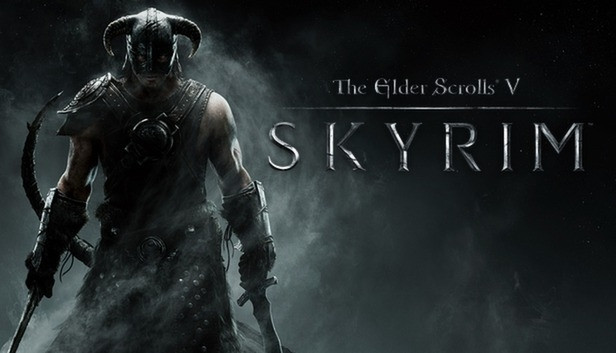
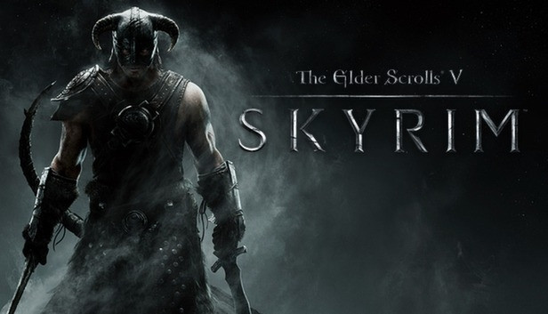

FromSoftware
FromSoftware is a Japanese game development studio founded in 1996. While initially not finding much success, they have built a large an loyal fanbase by creating extremely difficult and punishing games in incredibly expansive worlds with beautiful stories. Their most popular series, Dark Souls, has been incredibly successful, they have recently seen major success with two stand-alone product know as Sekiro: Shadows die twice and Elden Ring. There are also less-well known titles created since their change in game direction that, while not being as commercially successful as others, have also developed extremely loyal fan bases, such as Bloodborne and Demon Souls.


Rockstar Games
Rockstar games is an American video game development studio founded in 1998. They have found large success in two major Action-Adventure franchises: Grand Theft Auto and Red Dead Redemption, while also creating some smaller titles with loyal fan bases. While Grand Theft Auto and Red Dead Redemption are both open-world Action-Adventure series, their other smaller titles, such as Max Payne or L.A. Noire, differ from this norm and prove that the company is able to create a games in a variety of different genres.


Nintendo
Nintendo is a Japanese video game company founded in 1889. Their video game titles are usually created solely for the enjoyment of players who own their consoles. Nintendo has seen major success with the creation of their kid-friendly games and three extremely popular series: Pokemon, Mario, and Zelda. These series have each had multiple games created, spanning multiple generations of consoles, and continue to see mainstream success.


Bethesda Games Studios
Bethesda Game Studios is an American video game developper established in 2001 as a spin-off to its publishing counterpart, Bethesda Softworks. Though it started small, the company quickly grew with the astounding success of the Elder Scrolls series. This success allowed the studios to purchase the rights to the Fallout series. These two video game series have become staples of Bethesda Game Studios and displaying the developers knack for creating expansive Role Playing Games. More recently, in March 2021, Bethesda Game Studios was acquired by Microsoft to merge with Xbox Game Studios.
 
